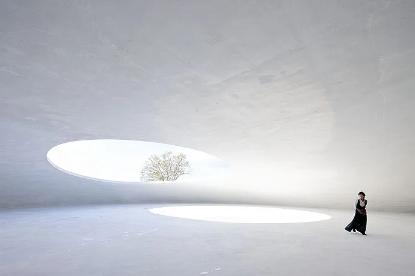
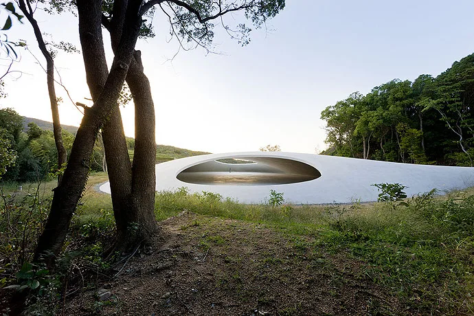
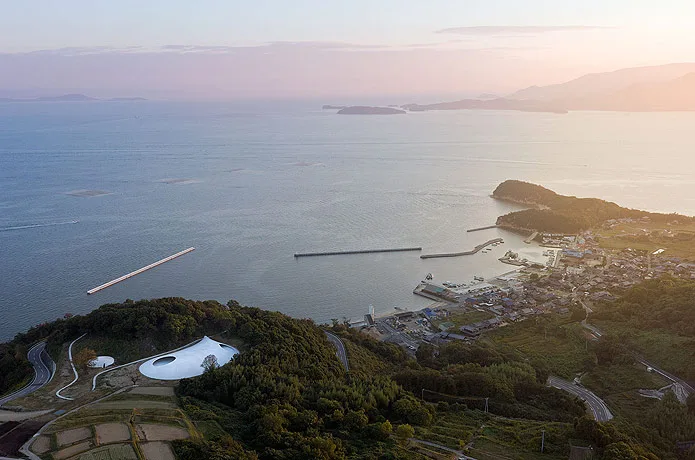
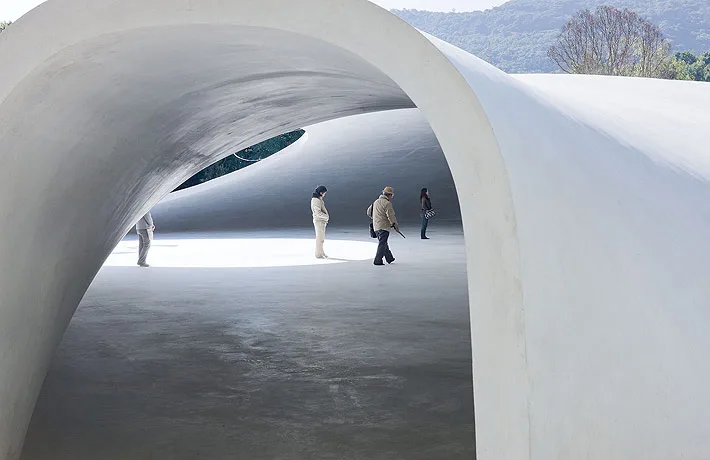
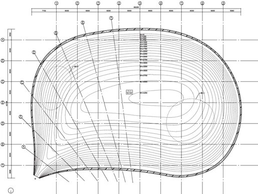
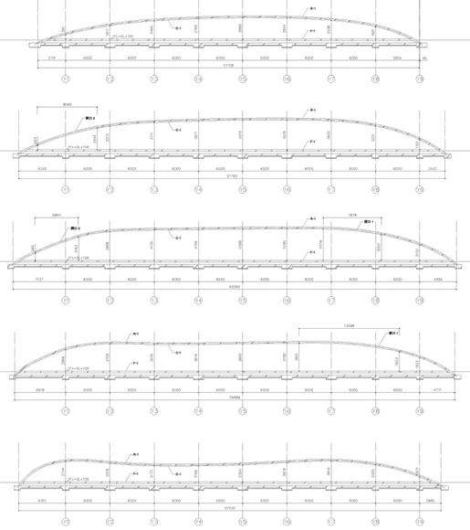

← Precedent index / 07 of 52
Art museum · 2010
Teshima Art Museum Ryue Nishizawa · artist Rei Naito
An art museum where openings in a column-free shell admit light, air and sound around Rei Naito’s installation.
The low concrete shell spans without internal columns. Two oval openings admit light, wind and sound, so the experience of the artwork changes with the weather and the time of day.
Museum account — Benesse Art Site Naoshima ↗

Fig. 01 Interior oculusIwan Baan. Drawings credited by Metalocus to Naoshima Fukutake Art Museum Foundation. Online source Relevant connections THINK The interior offers a setting for quiet observation and contemplation.
SHOW The museum houses an artwork whose experience is closely connected to its architectural setting.
Images and drawings / 06

Fig. 02 ExteriorIwan Baan. Drawings credited by Metalocus to Naoshima Fukutake Art Museum Foundation. Online source 
Fig. 03 Island settingIwan Baan. Drawings credited by Metalocus to Naoshima Fukutake Art Museum Foundation. Online source 
Fig. 04 EntranceIwan Baan. Drawings credited by Metalocus to Naoshima Fukutake Art Museum Foundation. Online source 
Fig. 05 Plan - shell geometryIwan Baan. Drawings credited by Metalocus to Naoshima Fukutake Art Museum Foundation. Online source 
Fig. 06 Sections - shellIwan Baan. Drawings credited by Metalocus to Naoshima Fukutake Art Museum Foundation. Online source ← All 52 precedents Online sources for this project Next: KAIT Workshop →